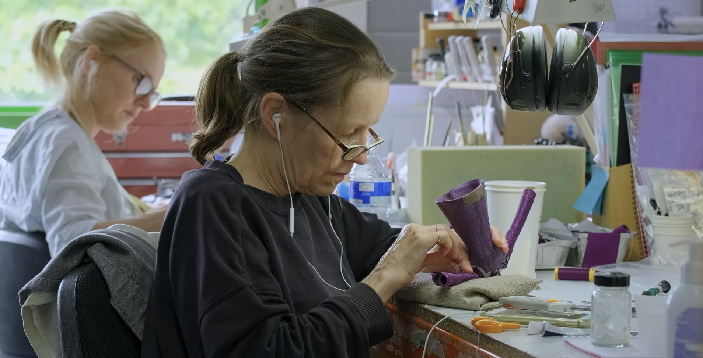
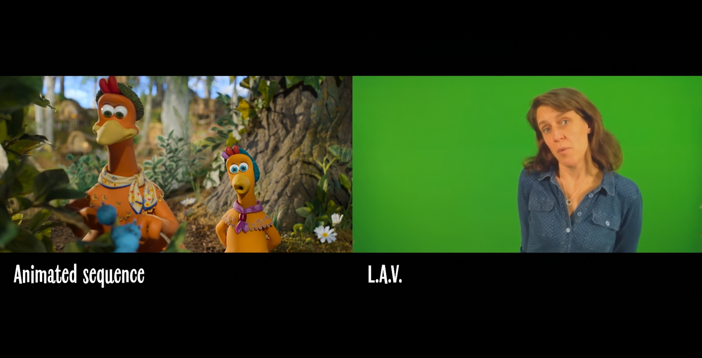
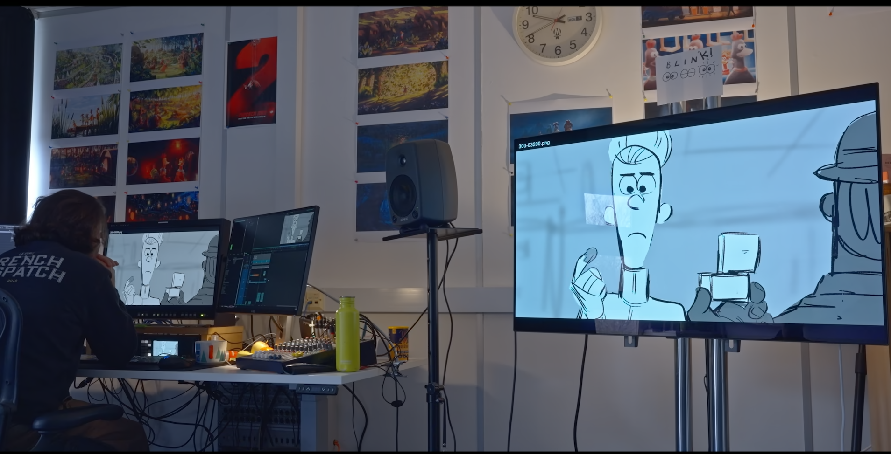
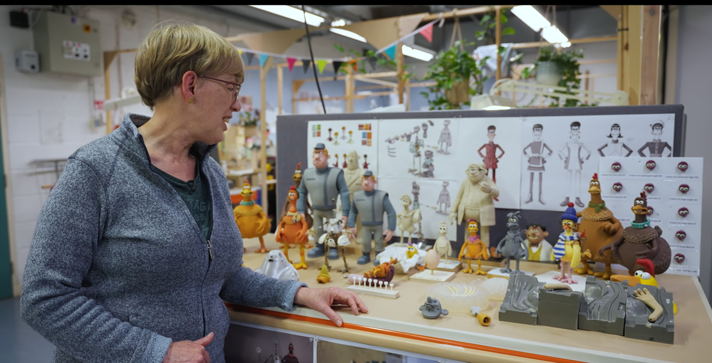
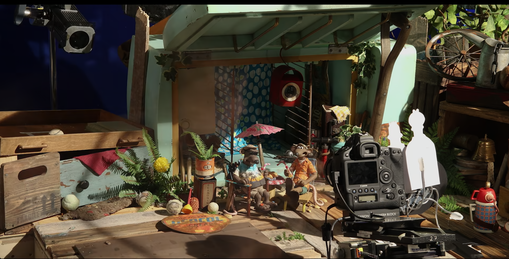
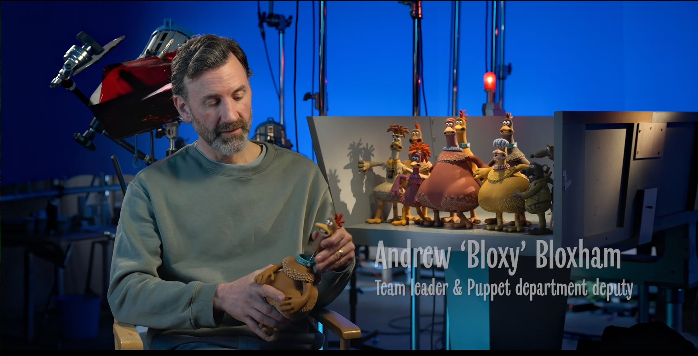

メイキング・オブ

キャラクターデザインの進化
今作では、前作のデザインをベースにしながらも、キャラクターたちにより豊かな表情とディテールが加えられました。衣装や小物も個性が出るよう工夫され、世代交代の雰囲気も反映されています。

声優陣の熱演
本作では豪華なキャストが集まり、それぞれのキャラクターに命を吹き込んでいます。特に感情表現やユーモアのタイミングにこだわり、何度もリテイクを重ねて完成度を高めました。

チームワークで生まれる感動
制作には何百人ものスタッフが関わり、それぞれが専門性を活かして一つの世界を作り上げました。アート、音響、編集など多くの分野が連携し、作品に深みを与えています。

ストーリーの進化
本作のストーリーは、前作からの成長や親子の絆といったテーマが中心です。脚本段階では何度もアイディアの練り直しが行われ、ユーモアと感動のバランスを大切に構成されました。

ビジュアルの世界観づくり
『チキンラン ナゲット大作戦』では、色彩や光の使い方によって、場面ごとの雰囲気が丁寧に表現されています。平和な島の温かさと、ナゲット工場の冷たい空気の対比が、物語に緊張感と深みを与えています。

チームの連携と工夫
映像、照明、美術、編集など、あらゆる部門のスタッフが一丸となって作業を進めました。アードマン特有のユーモアや繊細な演出が、細部にまでこだわったプロセスから生まれています。